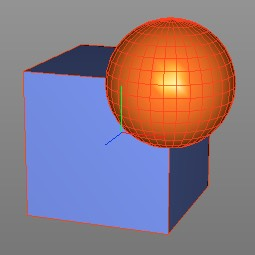
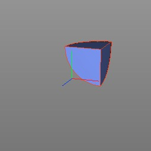
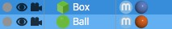
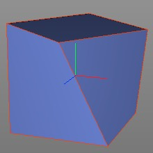
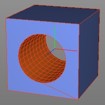

Boolean Tool
The boolean tool allows you to perform boolean (CSG) operations on polygon objects. Cheetah3D supports the following three boolean operations:
|  |  |
 |
Hints
When working with booleans please consider the following:
- Object order: The result of the boolean operations can depend on the order in which you select the objects. Especially for the Subtract operation it's important that you select the objects in the proper order. Hereby the sub selection (light blue in the object browser) is subtracted from the main selection (dark blue in the objects browser).
Ball will be subtracted from Box. - Twisted polygons: The boolean tool requires that the mesh has flat (coplanar) polygons. If there are twisted (non-coplanar) polygons in the mesh the booleans might fail. If that happens it's best to triangulate the twisted polygons since triangles are always flat.
Mesh with twisted (non-coplanar) polygons. - Polygons with holes: At the moment Cheetah3D just supports normal polygons. It doesn't support polygons with holes yet. But sometimes are boolean operation creates a polygon with a hole. In this cases Cheetah3D adds an auxiliary edge which connects the outer loop of the polygon with the inner loop. That effectively converts the polygon with hole in a normal polygon.
Auxiliary edge.
Modes
The boolean tool is available in point, edge, polygon and object mode and can only be applied on polygon objects.


To perform a boolean operation you first have to select two (or more) polygon objects. Once you've done that call the "Tools->Polygon->Boolean Add", "Tools->Polygon->Boolean Subtract" or "Tools->Polygon->Boolean Intersect" tool from the main menu.
Keys
- none
Properties
- none